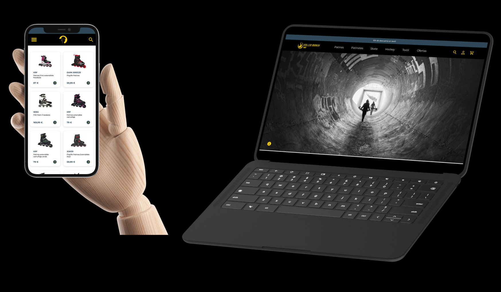
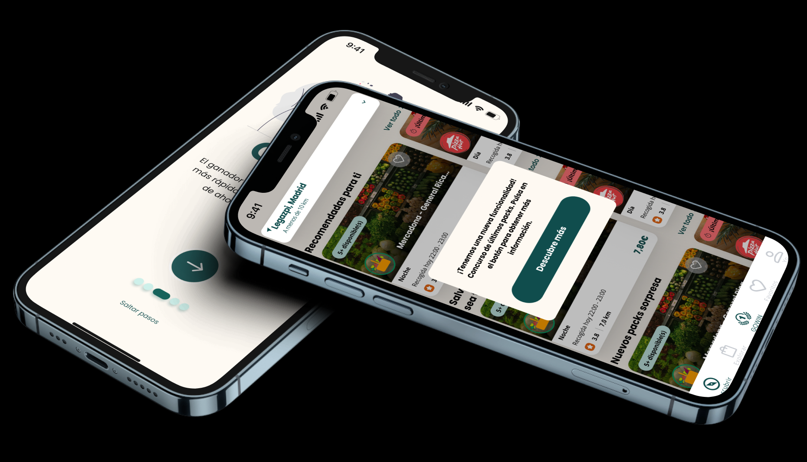

Here you can see my works
Nautic is a mobile application for nautical insurance. Designed entirely by me.

We redesigned the entire roller monkey shop website. We made a responsive website according to the needs of the users.
Creating new functionalities that adapt to the user's needs has never been easy. This time we are introducing a new feature in the TGTG app.
